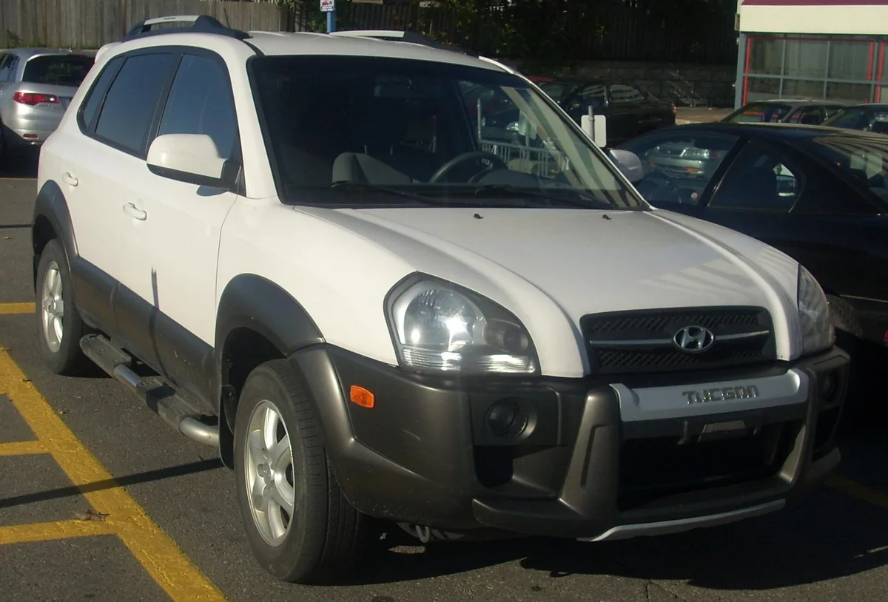
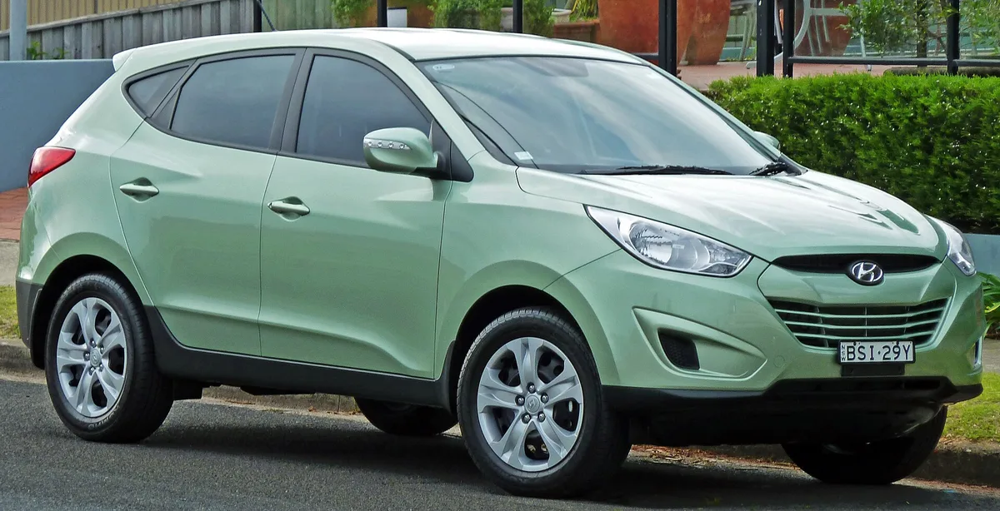
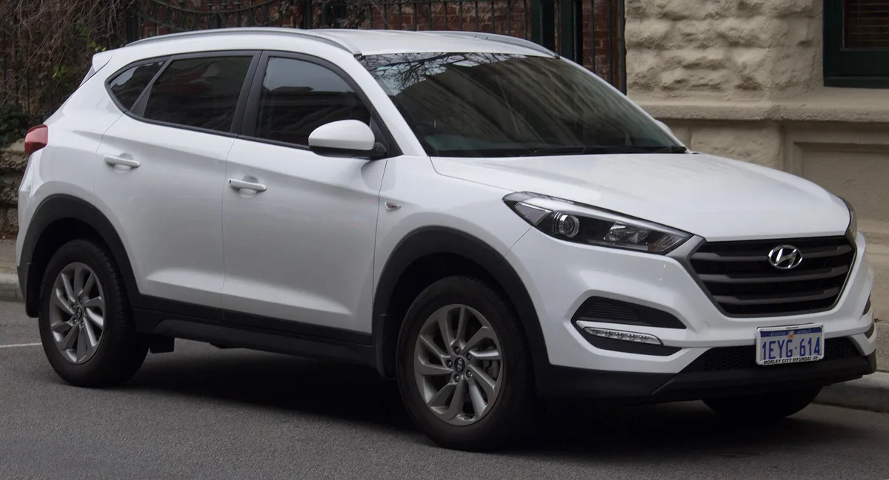
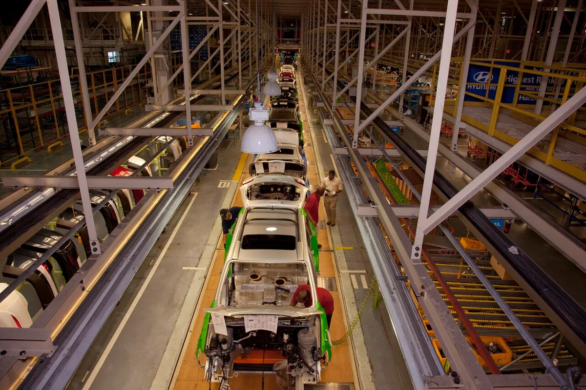
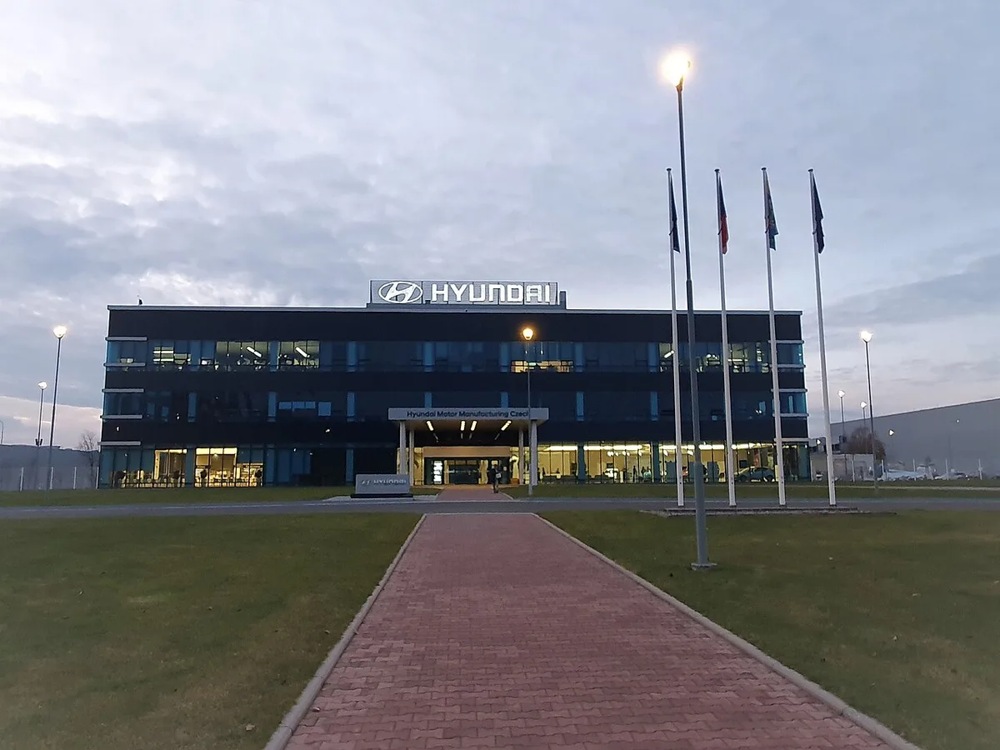
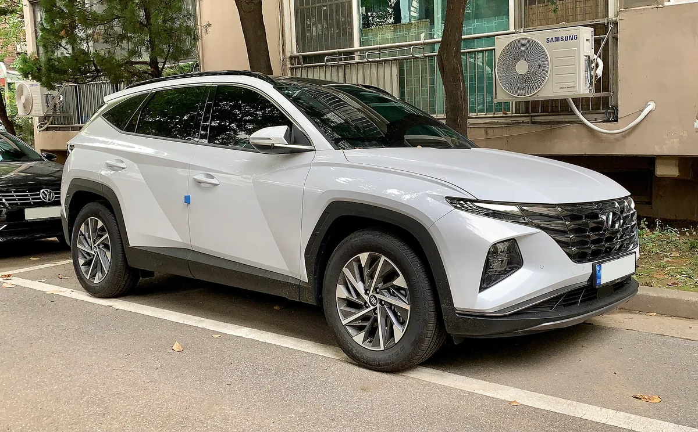

▲ 국산 SUV 최초로 누적 1000만 대를 넘긴 투싼의 최신 5세대 모델 ⓒ 현대자동차그룹
"국산 SUV 최초 1000만 대"라는 타이틀은 한국에서 얻은 것이 아니다. 현대자동차 투싼이 2004년 출시 이후 올해 8월까지 쌓은 글로벌 누적 판매 1061만6102대 가운데 국내 판매는 95만3029대, 나머지 966만3073대(91%)가 해외에서 팔렸다. 966만3073대를 95만3029대로 나누면 약 10.1배다. 블로터는 30일 현대차 자료를 인용해 "국내에서 한 대가 팔리는 동안 해외에서는 약 열 대가 팔린 셈"이라고 전했다.
1. 1061만 대일까, 1117만 대일까 — 숫자부터 정리
이번 발표에서 가장 헷갈리는 대목은 누적 판매 숫자가 두 개라는 점이다. 블로터와 한국경제·아시아경제·머니투데이 등 복수 매체가 인용한 현대차 자료를 종합하면 기준은 다음과 같다.
| 구분 | 판매량 | 비고 |
|---|---|---|
| 중국 전용 ix35 제외 | 1061만6102대 | 현대차가 '국산 SUV 최초 1000만 대' 기준으로 내세운 수치 |
| 중국 전용 ix35 | 55만4049대 | 현대차 발표 기준 별도 집계 |
| ix35 포함 | 1117만151대 | 위 두 수치의 합 |
| 국내 판매(ix35 제외) | 95만3029대 | 전체의 약 9.0% |
| 해외 판매(ix35 제외) | 966만3073대 | 전체의 약 91.0% |
| └ 미국(ix35 제외 해외에 포함) | 222만7154대 | 가솔린 등 195만3485대 + 하이브리드 27만3669대(아시아경제 보도) |
"1000만 대 돌파" 시점 표기도 짚어둘 필요가 있다. 현대차 자료 기준으로 누적 판매는 2008년 100만 대, 2016년 500만 대, 2025년 1000만 대를 차례로 넘었다. 즉 1000만 대 고지를 밟은 것은 지난해이고, 이번에 공개된 1061만6102대는 그 뒤 올해 8월까지 이어진 누적치다. 다만 정확히 몇 월에 1000만 대를 넘겼는지는 현대차 보도자료와 언론 보도 어디에서도 확인하지 못했다. 참고로 코리아헤럴드는 2025년 3월 "2025년 1월 기준 누적 963만9991대이며 지난해 연간 판매(63만4294대) 속도라면 2025년 중반 1000만 대를 넘을 것"이라고 전망했다(집계 기준은 명시되지 않았고, 실제 돌파 월은 아니다).
📍 기준 차이에 주의
일부 매체는 "글로벌 누적 1117만 대"를 제목에 올렸고 다른 매체는 "1061만 대"를 썼다. 둘 다 같은 현대차 자료에서 나온 수치이며, 중국 전용 ix35 포함 여부만 다르다. '국산 SUV 최초 1000만 대' 타이틀은 어느 기준으로 봐도 성립하지만, 현대차가 공식 실적으로 내세운 쪽은 ix35 제외 수치다. 미국 비중도 같은 원리로, 블로터·아시아경제는 ix35 포함 전체 대비 19.9%, 한국경제는 해외 판매 대비 23.1%를 썼다. 카프리즘이 직접 나눠 보면 222만7154 ÷ 1117만151 = 19.9%, 222만7154 ÷ 966만3073 = 약 23.05%다. 한국경제와 아시아경제가 23.1%로 반올림해 쓴 값이며, 분모가 다를 뿐 두 비율은 모두 산술적으로 성립한다.
2. 100만 대에서 1000만 대까지 — 500만 대를 더하는 데 9년
누적 판매의 속도는 갈수록 빨라졌다. 블로터에 따르면 첫 500만 대를 파는 데 12년이 걸렸지만, 그다음 500만 대를 더하는 데는 9년이 걸렸다.
| 누적 판매 | 돌파 시점 | 소요 기간 |
|---|---|---|
| 100만 대 | 2008년 | 출시(2004년) 후 약 4년 |
| 500만 대 | 2016년 | 출시 후 12년 |
| 1000만 대 | 2025년(월은 미확인) | 500만 대 이후 9년 |
| 1061만6102대 | 2026년 8월 | - |
연간 실적은 더 극적이다. 해외 생산이 본격화한 시기 투싼의 연간 판매량은 2010년 31만7932대에서 2012년 51만2553대로 약 61% 늘었다. 이어 2015년 3세대(TL) 투입과 해외 공장 물량 확대가 맞물리면서 2016년 73만5173대로 역대 최대를 찍었다. 아시아경제도 2016년 73만5173대를 최대 실적으로 전했다.
| 연도 | 현대차 보도자료 인용 보도(아시아경제 등) | 블로터 보도 |
|---|---|---|
| 2010년 | 31만7932대(블로터 보도) | 31만7932대 |
| 2012년 | 51만2553대(블로터 보도) | 51만2553대 |
| 2016년 | 73만5173대(역대 최대) | 73만5173대(역대 최대) |
| 2021년 | 56만 대 | 50만 대 |
| 2022년 | 62만 대 | 57만 대 |
| 2023년 | 69만 대 | 65만 대 |
| 2024년 | 64만 대 | 63만 대 |
| 2025년 | 63만 대 | 65만 대 |
최근 5년 수치는 매체마다 달랐다. 아시아경제·뉴스와이어(현대차 보도자료 배포) 등은 2021~2025년 56만·62만·69만·64만·63만 대로 전했고, 블로터는 50만·57만·65만·63만·65만 대로 보도했다. 어느 쪽이 맞는지 현대차 IR 원표를 열람하지 못해 확정할 수 없어, 이 기사는 두 계열의 수치를 모두 병기한다. 두 자료 모두 2021~2025년 5년 연속 현대차 차종별 연간 판매 1위라는 점에는 일치한다(코리아헤럴드는 2024년 연간 판매를 63만4294대로 전한 바 있다).

▲ 2004년 출시된 1세대 투싼(JM). 사진은 캐나다 몬트리올에서 촬영된 2005년형이다 ⓒ Bull-Doser / Wikimedia Commons (Public domain)
3. 세대별 판매 — 4세대가 3세대를 넘었다
세대별 실적을 보면 세대가 바뀔수록 판매가 커졌다. 4세대(NX4)는 올해 8월까지의 실적만으로 앞선 모든 세대를 넘어섰다.
| 세대 | 국내 출시 시점(카프리즘 정리) | 판매량 |
|---|---|---|
| 1세대(JM) | 2004년 | 약 162만 대 |
| 2세대(LM, 국내명 투싼ix) | 2009년 | 약 250만 대 |
| 3세대(TL) | 2015년 | 약 312만5000대 |
| 4세대(NX4) | 2020년 | 약 337만3000대 |
| 합계(카프리즘 계산) | - | 약 1061만8000대 |
세대별 판매를 모두 더하면 약 1061.8만 대로, 중국 전용 ix35를 제외한 누적치 1061.6만 대와 사실상 같다. 1세대·2세대가 만 대 단위로 반올림된 수치라 0.2만 대 차이는 반올림 오차 범위다. 반면 ix35 포함 누적(1117만 대)과는 55만 대나 차이가 나므로, 세대별 판매는 중국 전용 ix35를 제외한 기준이라고 계산으로 확인된다. 서울경제 영문판은 세대별 기간을 1세대 2004~2016년, 2세대 2009~2018년, 3세대 2015~2022년으로 서로 겹치게 적었는데, 지역별로 이전 세대와 신세대가 함께 팔린 기간까지 포함한 것으로 보이며 현대차 원자료는 확인하지 못했다. 위 표의 출시 시점은 한국 기준으로 카프리즘이 정리한 것이다.

▲ 2010년형 ix35(LM). 한국에서는 '투싼ix'로 팔린 2세대로, 통계에서 제외된 '중국 전용 ix35'와는 별개다 ⓒ OSX / Wikimedia Commons (Public domain)

▲ 2015년 등장한 3세대 투싼(TL). 2016년 연간 73만5173대로 역대 최대 판매 기록을 세운 시기의 모델이다 ⓒ EurovisionNim / Wikimedia Commons (CC BY-SA 4.0)
4. 4%에서 76%로 — '수출 차'에서 '현지 생산 차'로
투싼의 성장사에서 가장 큰 구조 변화는 어디서 만드느냐였다. 2005년만 해도 해외 판매 물량 가운데 현지 공장에서 만든 비중은 4.0%에 불과했고 대부분 국내에서 생산해 수출했다. 이 비중은 2010년 44.2%, 2016년 73.1%로 뛰었고 2023년에는 76.0%에 달했다. 현대차 보도자료도 "2023년 해외 판매의 76%가 현지생산, 2005년 4%"라고 밝혔다.
| 연도 | 현지생산 비중 | 비고 |
|---|---|---|
| 2005년 | 4.0% | 대부분 국내 생산 후 수출 |
| 2010년 | 44.2% | - |
| 2016년 | 73.1% | 연간 판매 역대 최대(73만5173대)와 같은 해 |
| 2023년 | 76.0% | - |
| 누적(2004~2026년 8월) | 60.6% | 585만8926대 / 해외 966만3073대 |
블로터는 미국·체코 등 주요 시장의 생산기지가 판매 확대를 뒷받침했다고 전했다. 현지 수요에 맞춰 공급을 조정하고, 완성차 수출에 따르는 환율·관세 변동 부담을 줄일 수 있는 기반이라는 설명이다. 표에서 확인되듯 2016년 역대 최대 판매와 현지생산 비중 70%대 진입 시점이 겹친다. 국내 외 대표 생산기지는 다음과 같다.
| 공장 | 투싼 생산 시작 | 확인된 내용 |
|---|---|---|
| 체코 노소비체(HMMC) | 2015년 6월(3세대) | 2024년 6월 누적 200만 대 생산, 2025년 공장 전체 27만6175대 중 투싼 76% |
| 미국 앨라배마 몽고메리(HMMA) | 2022년형(4세대)부터 | 투싼 내연기관 생산, 하이브리드는 아직 울산 수출(2026년 9월 기준) |
| 국내 울산 | - | 미국 판매 투싼 하이브리드 전량 생산(헤럴드경제 보도) |
국내 외 다른 해외 공장(중국·인도 등)의 투싼 생산 대수는 이번 조사에서 공식 자료로 확인하지 못해 표에서 뺐다.

▲ 미국 앨라배마 몽고메리 현대차 공장의 조립 라인. 2010년 3월 촬영된 자료사진이라 당시 생산 차종은 확인하지 못했다 ⓒ Carol M. Highsmith / 미 의회도서관·Wikimedia Commons (Public domain)
✅ 현지생산 76%의 함정 — 미국 하이브리드는 예외
· 전체 해외 판매의 현지생산 비중은 높지만, 헤럴드경제 등에 따르면 현재 미국에서 파는 투싼 하이브리드는 전량 울산공장에서 만들어 수출한다
· 앨라배마(몽고메리) 공장은 지금까지 투싼 내연기관 모델을 생산해 왔다
· 호세 무뇨스 현대차 사장은 29일(현지시간) 오토모티브뉴스 콩그레스에서 앨라배마에 "약 5억 달러(half a billion)"를 투자한다고 밝혔다. 자금은 신규 엔진, 하이브리드 부품, 주행거리연장형 전기차(EREV) 파워트레인 개발·생산에 쓰인다
· 무뇨스 사장은 "투싼 하이브리드를 앨라배마로 가져오고, 이어 싼타페도 가져올 것"이라고 말했다(오토모티브뉴스 인용 보도). 한국에서 만든 차량에 붙는 15% 관세를 피하려는 조치라는 해석이 함께 나온다
· 울산 생산은 유지하면서 앨라배마에서 추가 생산하는 방식으로 보도됐다. 옐로해머뉴스는 2027년형 신형 투싼·하이브리드 출시를 4분기로 전했지만, 앨라배마 하이브리드 양산 시작 시기는 확인하지 못했다
오토모티브뉴스 원문은 유료 구독 기사로, 카프리즘은 열람하지 못하고 검색 결과와 2차 보도로 확인했다. 원문 인터뷰는 아래에서 볼 수 있다. Automotive News 원문 바로가기
5. 유럽의 투싼 — 체코 노소비체가 만든다
유럽 판매용 투싼은 체코 노소비체 공장에서 만들어진다. 현대차 유럽법인에 따르면 노소비체는 2015년 6월 3세대 투싼 양산을 시작했고, 2024년 6월 투싼 누적 생산 200만 대를 넘었다. 3세대(2015~2020년) 생산분은 118만445대이며, 4세대는 2023년 한 해에만 24만4495대를 만들어 70개국으로 수출했다. 현대차는 이 자리에서 4세대 유럽 판매의 40%가 하이브리드·플러그인 하이브리드라고 밝혔다.
| 구분 | 수치 | 시점 |
|---|---|---|
| 투싼 양산 시작 | 3세대 | 2015년 6월 |
| 투싼 누적 생산 200만 대 | 4세대 1.6 하이브리드가 200만 번째 | 2024년 6월 |
| 3세대 생산량 | 118만445대 | 2015~2020년 |
| 4세대 연간 생산 | 24만4495대(70개국 수출) | 2023년 |
| 공장 누적 생산 500만 대 | 투싼 세대 합계 공장 생산의 절반 가까이 | 2026년 1월 |
| 공장 연간 생산 | 27만6175대, 투싼 76%(카프리즘 계산 약 21만 대) | 2025년 |
| 전동화 비중 | 투싼 하이브리드·PHEV 38%, 코나 일렉트릭 13% | 2025년 공장 생산 기준 |
다만 노소비체 생산량(2025년 공장 27만6175대)이 유럽 판매량과 같은 것은 아니다. 유럽법인은 생산량의 약 절반을 영국·독일·스페인·프랑스·이탈리아 등 유럽 주요 시장으로 수출한다고 밝혔고, 유럽 지역의 투싼 연간 판매 수치는 이번 조사에서 공식 자료로 확인하지 못했다.

▲ 체코 노소비체 현대차 공장(Hyundai Motor Manufacturing Czech) 본관. 2015년 6월부터 투싼을 만들어 유럽 등에 공급한다 ⓒ Qasinka / Wikimedia Commons (CC0)
6. 미국이 키운 투싼 — 누적 222만 대, 하이브리드가 끌었다
투싼의 최대 단일 시장은 미국이다. 2004년 진출 이후 올해 8월까지 누적 222만7154대가 팔렸다. 연간 판매는 2017년 처음 10만 대를 넘어 2023년 20만 대를 돌파했고, 현대차 미국법인이 발표한 2025년 판매는 23만4230대(전년 대비 14% 증가)로 사상 최대다.
| 연도 | 판매량 | 비고 |
|---|---|---|
| 2017년 | 11만4735대 | 처음 연 10만 대 돌파 |
| 2021년 | 14만721대 | GoodCarBadCar 집계 |
| 2022년 | 17만5307대 | GoodCarBadCar 집계 |
| 2023년 | 20만9624대 | 연 20만 대 돌파 |
| 2024년 | 20만6126대 | 현대차 미국법인 발표 |
| 2025년 | 23만4230대 | 현대차 미국법인 발표, 사상 최대 |
| 2026년 1~8월 | 15만8523대 | 블로터 보도 |
2024년 판매(20만6126대)는 2023년보다 줄었다는 점도 표에서 확인된다. 하이브리드 판매는 이보다 훨씬 가파르게 늘었다. 블로터에 따르면 투싼 하이브리드가 미국에 도입된 2021년 판매량은 1만8638대였지만 지난해에는 7만2578대로 3.9배 늘었다.
| 연도 | 투싼 판매 중 하이브리드 비중 | 하이브리드 판매량 |
|---|---|---|
| 2021년 | 12.3% | 1만8638대(블로터) |
| 2022년 | 17.8% | 약 3만1200대(카프리즘 계산) |
| 2023년 | 19.2% | 약 4만200대(카프리즘 계산) |
| 2024년 | 32.5% | 약 6만7000대(카프리즘 계산) |
| 2025년 | 31.0% | 7만2578대(블로터) |
| 2026년 1~8월 | 27.8% | 4만4069대(블로터) |
✅ 카프리즘이 계산으로 맞춰 본 것
· 미국 누적 222만7154대 = 가솔린 등 195만3485대 + 하이브리드 27만3669대(아시아경제)로 정확히 합쳐진다
· 연도별 비중에 미국법인 연간 판매를 곱해 하이브리드 판매량을 추산해 더하면 약 27만3700대로, 공식 누적 27만3669대와 수십 대 차이라 비중과 판매량이 서로 정합적이다
· 지난해 72,578대 ÷ 234,230대 = 31.0%, 올해 44,069대 ÷ 158,523대 = 27.8%로 블로터 수치가 맞다
· 다만 블로터의 "전체 투싼 판매 증가율 약 55%"는 미국법인 공개 판매(2021년 14만721대 → 2025년 23만4230대)로 계산하면 약 66%로 다르다. 2021년 비중 12.3%도 미국법인 판매 기준으로 역산하면 13.2%(1만8638 ÷ 14만721)여서 산정 기준이 다른 것으로 보인다. 어느 쪽이든 하이브리드(3.9배)가 전체 증가율보다 훨씬 높다는 결론은 같다
비중은 2024년 32.5%를 정점으로 지난해 31.0%, 올해 1~8월 27.8%로 다소 낮아졌다. 계산해 보면 하이브리드 판매량은 2024년 약 6만7000대에서 2025년 7만2578대로 늘었지만 전체 판매가 더 크게 늘어 비중이 내려간 것이다. 다만 비중 하락의 이유는 블로터도, 현대차 공개 자료도 설명하지 않아 카프리즘은 확인하지 못했다. 신형 전환 재고나 트림 구성 변화 같은 추정은 근거가 없어 적지 않는다.

▲ 4세대 투싼(NX4). 2020년 등장해 올해 8월까지 337만3000대가 팔리며 3세대 실적을 넘어섰다 ⓒ Benespit / Wikimedia Commons (CC BY-SA 4.0)
현대차·기아 전체의 미국 시장점유율과 하이브리드 판매 흐름은 현대차·기아 미국 시장 점유율 기사에서 따로 다뤘다. 미국형 투싼 하이브리드의 출시 배경은 투싼 하이브리드 미국 출시 예고 기사에서 볼 수 있다.
7. 외부 평가 — 안전성과 패밀리 SUV 이미지
블로터는 판매 확대 배경으로 외부 평가를 함께 소개했다. 카프리즘이 각 기관·현대차 발표로 다시 확인한 결과는 다음과 같다.
| 기관 | 블로터 보도 | 카프리즘 확인 |
|---|---|---|
| 미국 IIHS | 4세대 투싼, TSP+ 5년 연속 | 2026년형 투싼이 TSP+를 받았다는 현대차 발표(2026년 3월)와 2025년형 TSP+ 수상을 확인. 아시아경제도 2022~2026년 유지로 보도. 2023·2024년형은 개별 확인 못함 |
| 유로 NCAP | 2·3·4세대 각각 별 다섯 개 | 4세대는 2021년 10월 현대차 유럽법인이 5성 획득을 발표. 2·3세대는 개별 확인 못함 |
| U.S. 뉴스 & 월드 리포트 | 2022년부터 5년 연속 '최고의 패밀리 준중형 SUV' | 2026년 '베스트 컴팩트 SUV 포 패밀리스' 5년 연속 수상 보도 확인(U.S. News 계열 자료 인용) |
| 영국 왓 카(What Car?) | 지난해 '최고의 중고 가족 SUV' | 2025 What Car? 중고차 어워즈 '베스트 유즈드 패밀리 SUV' 선정, 현대차그룹이 발표 |
같은 U.S. News는 2026년 '최고의 컴팩트 SUV(가성비)'에도 투싼을 선정했고, 하이브리드도 컴팩트 하이브리드 SUV 부문 상위에 올랐다고 전해졌다. 현대차그룹 뉴스룸에서 2026 IIHS 수상 내용을 확인할 수 있다. IIHS 수상 뉴스룸 바로가기
8. 5세대(NX5)의 과제와 국내 시장 — 이 기반을 이어갈 수 있을까
현대차는 5세대에서 공간과 편의성을 강화한다는 방침이다. 신형은 '아트 오브 스틸' 디자인 철학을 적용해 박스형 SUV 스타일을 강조했고, 차체를 키워 실내 공간을 넓혔으며 최신 커넥티비티 사양을 갖췄다. 국내에 이어 2027년부터 북미와 유럽 등 주요 시장에 순차 출시할 예정이다. 블로터는 향후 성장이 지역별 수요 대응과 전동화 비중 확대에 달릴 전망이라고 짚었다. 미국형 신형은 10월 1일 뉴욕에서 공개될 예정이라는 보도도 나왔는데, 현대차 미국법인이 10월 1일(현지) 오후 5시 15분 뉴욕 롱아일랜드시티에서 신형 투싼 월드 프리미어를 열고 생중계한다고 공식 공지했다(한경비즈니스도 같은 일정을 예고했다).

▲ 5세대 신형 투싼의 후면부. 가로로 이어진 발광 리어 램프에 'TUCSON' 레터링을 적용했다 ⓒ 현대자동차그룹
국내 시장은 정반대 흐름이다. 누적 국내 판매(95만3029대)는 전체의 9%에 그치고, 구형 투싼의 국내 판매는 올해 1~8월 2만2384대로 전년 같은 기간(3만4555대)보다 35.2% 줄었다. 22384 ÷ 34555를 계산하면 약 0.648로 감소율이 맞다. 신형 가격이 5000만 원 선에 근접할 수 있다는 전망이 나온 상태다.
| 항목 | 수치 | 비고 |
|---|---|---|
| 국내 누적 판매 | 95만3029대 | 전체의 약 9% |
| 2025년 1~8월 국내 판매 | 3만4555대 | 기존 카프리즘 기사 기준 |
| 2026년 1~8월 국내 판매 | 2만2384대 | 전년 동기 대비 -35.2% |
| 5세대 국내 가격 공개 | 2026년 10월 중 예정 | 기존 카프리즘 기사 기준 |
자세한 내용은 5세대 투싼 공개 기사와 신형 투싼 가격 딜레마 기사에서 다뤘다. 현대차가 2030년까지 판매를 끌어올리겠다는 큰 그림은 2030년 555만 대 목표 기사를 참고할 수 있다.
현대차 관계자는 블로터에 "투싼은 지난 22년간 수출형 모델에서 현지생산 기반의 글로벌 전략 모델로 진화해왔다"며 "상품 경쟁력을 바탕으로 글로벌 시장에서 입지를 강화하겠다"고 말했다. 앨라배마 투자 소식은 헤럴드경제 보도에서도 확인할 수 있다. 헤럴드경제 보도 바로가기
9. 요약
투싼은 2004년 출시 이후 올해 8월까지 중국 전용 ix35를 제외하고 1061만6102대(ix35 포함 1117만151대)가 팔려, 국산 SUV 최초로 누적 1000만 대를 넘었다. 1000만 대 돌파 시점은 현대차 발표 기준 지난해이며, 현대차그룹에서는 아반떼·엑센트에 이어 세 번째다. 정확한 돌파 월은 확인되지 않았다.
성적표의 91%는 해외에서 나왔다. 국내 95만3029대, 해외 966만3073대로 약 10.1배 차이이며, 해외 판매 중 현지생산 비중은 2005년 4.0%에서 2023년 76.0%로 커졌다. 유럽 물량은 체코 노소비체, 미국은 앨라배마가 맡고, 미국은 누적 222만7154대에 지난해 23만4230대로 사상 최대를 썼다.
이제 과제는 5세대(NX5)다. 국내 출시 뒤 2027년부터 북미·유럽에 순차 출시될 예정이며, 미국 판매 하이브리드의 앨라배마 현지생산 전환(약 5억 달러 투자, 엔진·하이브리드 부품·EREV 포함)도 보도됐다. 다만 하이브리드 양산 시기, 최근 5년 연간 도매 판매의 정확한 수치, 미국 하이브리드 비중 하락의 이유는 공식 확인이 필요하다.